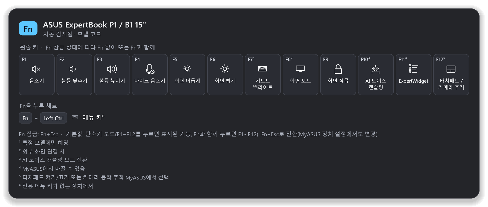
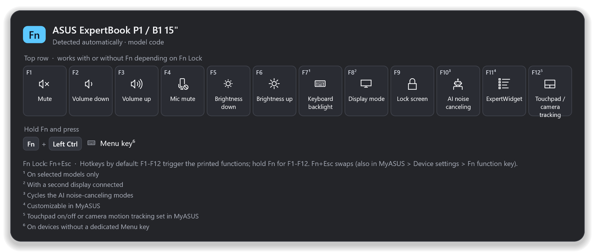

Fn 키, 이제 외우지 마세요
Stop guessing your Fn keys
왼쪽 Ctrl을 길게 누르면 내 노트북 모델의 Fn 키 기능이 화면에 떠요. 손을 떼면 사라져요. 맥의 CheatSheet처럼요.
Hold Left Ctrl and the Fn-key functions of your exact laptop model appear on screen. Let go and they're gone — like CheatSheet on the Mac.
설치 없이 exe 하나(약 2 MB) · 관리자 권한 불필요 · 자동 업데이트 · 무료 오픈소스(MIT)
One ~2 MB exe, no installer · no admin rights · auto-updates · free and open source (MIT)


이렇게 동작해요
How it works
제조사 설명서에서 확인한 키 정보만 보여 주고, 모르는 모델은 추측하지 않아요.
It only shows key maps taken from the maker's own manuals — and it never guesses an unknown model.
모델 자동 확인
Detects your model
Windows에 기록된 제조사·모델 코드(예: P1503CVA, Lenovo 머신 타입 21HM)로 맞는 키보드 프로필을 찾아요.
It reads the maker and model code Windows already knows (e.g. P1503CVA, or a Lenovo machine type like 21HM) and finds the matching keyboard profile.
길게 누르면 표시
Hold to show
Ctrl만 0.9초 누르고 있으면 떠요. 다른 키를 같이 누르거나 클릭하면 뜨지 않으니 Ctrl+C는 그대로예요.
Hold Ctrl alone for 0.9 s. Press another key or click and it stays hidden, so Ctrl+C works as always.
모르면 묻기
Asks instead of guessing
목록에 없거나 후보가 여럿이면 엉뚱한 표를 띄우지 않고, 설정에서 직접 고르게 해요. 내 프로필 파일도 추가할 수 있어요.
If your model isn't listed, or several match, it won't show a wrong map — you pick it once in Settings. You can add your own profile files too.
왜 Fn이 아니라 Ctrl인가요?
Why Ctrl and not Fn itself?
ASUS·Lenovo 노트북 대부분은 Fn 키를 키보드 컨트롤러(EC) 안에서 처리해요. Fn을 혼자 누르면 Windows에 아무 신호도 오지 않아서, 어떤 앱도 Fn을 누르고 있는지 알 수 없어요.
On almost every ASUS and Lenovo laptop the Fn key is handled inside the keyboard controller (EC). Pressed alone it sends nothing to Windows, so no app can tell it's being held.
- 그래서 기본값은 Fn 바로 옆의 왼쪽 Ctrl 길게 누르기예요.
- ThinkPad는 BIOS·Vantage에서 Fn↔Ctrl 위치 바꾸기가 가능해요.
- Fn이 신호를 보내는 모델이라면 설정의 직접 등록으로 Fn 자체를 트리거로 쓸 수 있어요.
- 트레이 아이콘을 클릭해도 언제든 볼 수 있어요.
- So the default trigger is holding Left Ctrl, right next to Fn.
- ThinkPads can swap Fn and Ctrl in BIOS / Lenovo Vantage.
- If your Fn key does send a signal, capture it in Settings and use Fn itself.
- Clicking the tray icon shows the sheet any time.
개인정보·보안
Privacy & security
Rust + Win32로 만든 네이티브 앱이라 트레이에 있어도 메모리를 몇 MB만 써요. 관리자 권한 없이 동작하고, 네트워크는 하루 한 번 GitHub 업데이트 확인에만 써요. 키보드 후킹은 트리거 키를 혼자 누르고 있는지만 보고 입력 내용은 저장하지 않아요. 기기 정보는 모델 문자열만 읽어요(일련번호 X).
A native Rust + Win32 app that uses only a few MB of memory in the tray. No admin rights; the network is used only for a once-a-day GitHub update check. The keyboard hook only checks whether the trigger key is held alone and never stores what you type. Only model strings are read — never serial numbers.
지원 노트북 목록
Supported laptops
지금 앱에 들어 있는 프로필 전체예요. 모델을 펼치면 키 배치와 근거가 된 공식 설명서 링크를 볼 수 있어요.
Every profile the app ships with. Open a model to see its key map and the official manual it comes from.
내 노트북이 자동으로 인식될까요?
Will my laptop be detected automatically?
PowerShell에서 아래 명령을 실행하고 결과를 붙여 넣으세요. 앱과 같은 규칙으로 확인해요. (붙여 넣은 내용은 이 페이지 밖으로 나가지 않아요.)
Run this in PowerShell and paste the output. It's checked with the same rules the app uses. (Nothing you paste leaves this page.)
Get-ItemProperty 'HKLM:\HARDWARE\DESCRIPTION\System\BIOS' | Select SystemManufacturer,SystemProductName,SystemFamily,SystemVersion,BaseBoardProduct | Format-List
FAQ
내 모델이 목록에 없어요.
My model isn't listed.
앱의 설정 → 기기에서 키보드가 같은 모델을 고르면 바로 쓸 수 있어요. 같은 버튼 옆의 이 모델 추가 요청을 누르면 모델 정보가 채워진 GitHub 이슈가 열려요. 공식 설명서 링크를 함께 주시면 더 빨라요.
Pick a model with the same keyboard in Settings → Device and it works right away. Request this model opens a GitHub issue with your model info filled in — a link to the official manual speeds things up.
표시된 키가 실제와 달라요.
A key on the sheet is wrong.
같은 시리즈라도 연식·SKU마다 다를 수 있어요. 모델 정보와 함께 이슈로 알려 주세요. 각 프로필에는 근거가 된 설명서 링크가 붙어 있어요.
Even within a series, keys can differ by year or SKU. Please open an issue with your model info — every profile links the manual it's based on.
Fn 잠금(Fn Lock)은 어떻게 되나요?
What about Fn Lock?
윗줄(F1–F12)은 Fn 잠금 상태에 따라 Fn 없이 또는 Fn과 함께 동작해요. 화면 아래에 모델별 잠금 키(보통 Fn+Esc)와 기본값을 적어 두었어요.
The top row works with or without Fn depending on Fn Lock. The bottom of the sheet shows your model's lock combo (usually Fn+Esc) and its default.
어떤 창에서는 안 떠요.
It doesn't show over some windows.
작업 관리자처럼 관리자 권한으로 실행된 창이 앞에 있으면 Windows가 일반 앱에 키 입력을 알려 주지 않아요. 보안을 위해 이 앱은 관리자 권한으로 실행하지 않으니, 그럴 땐 트레이 아이콘을 클릭하세요.
When an elevated window (e.g. Task Manager) has focus, Windows doesn't pass key events to normal apps. Fn Cheatsheet deliberately never runs elevated — click the tray icon instead.
SmartScreen 경고가 떠요.
Windows SmartScreen warns about the file.
코드 서명을 하지 않은 새 앱이라 그래요. 추가 정보 → 실행을 누르면 돼요. 릴리스마다 SHA-256 체크섬 파일을 함께 올려 두었어요.
It's a new, unsigned app. Choose More info → Run anyway. Every release ships with a SHA-256 checksum file.
Dell·HP·삼성·LG도 되나요?
Dell, HP, Samsung, LG?
지금은 ASUS와 Lenovo만 넣었어요. 데이터 형식은 제조사와 무관하니, 공식 설명서를 근거로 한 기여를 환영해요.
Only ASUS and Lenovo for now. The data format is vendor-neutral — contributions backed by official manuals are welcome.